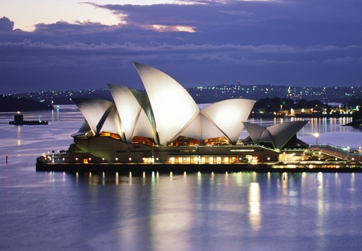

시드니!!!!!!!!!!!!!!!!!!!!!
2020년 8월 8일 수정본
korea landmark
Italy
Sydney
Athens

오페라하우스
(영어: Opera House)는 오페라가 공연되는 극장 건물이다. 비록 다른 공연 예술이 그곳에서 공연되더라도, 특별히 오페라를 염두에 두고 건립되었다. 가장 대표적인 오페라 극장으로 시드니 항구에 위치한 시드니 오페라 하우스이다.